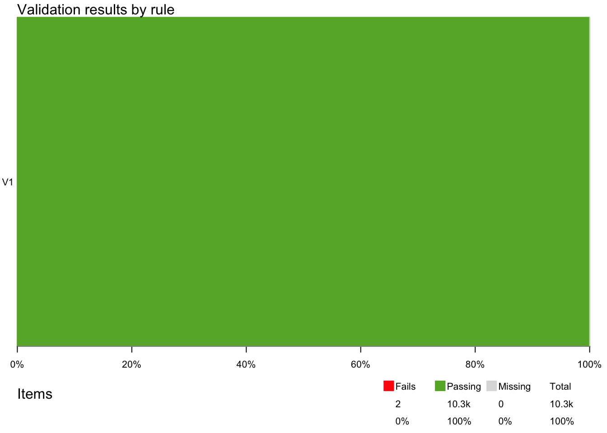
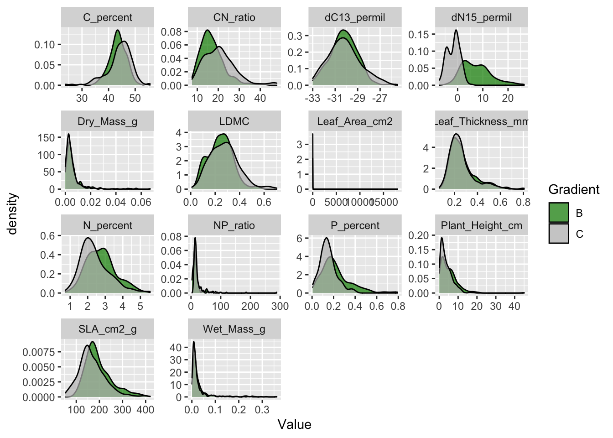
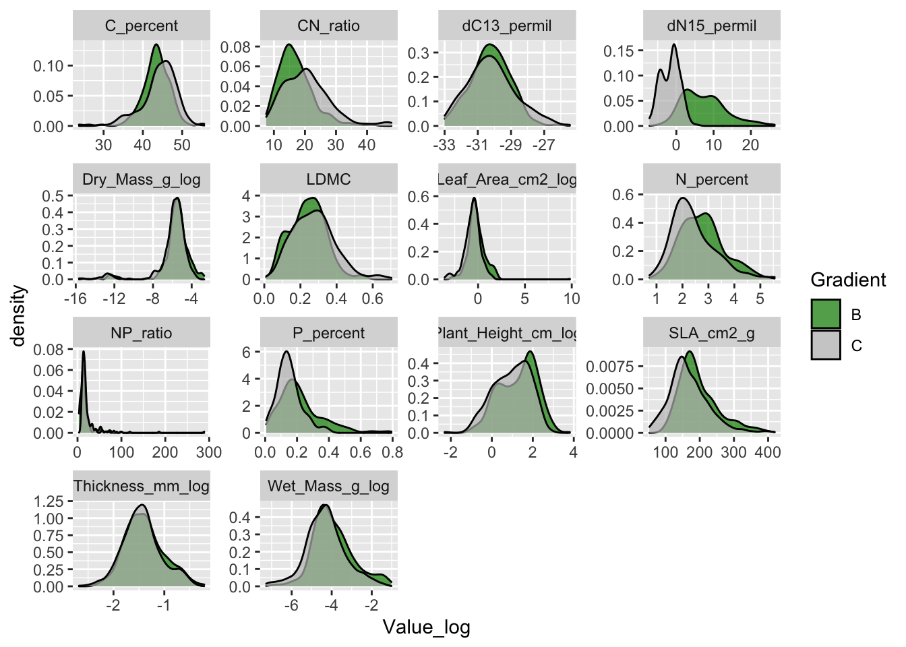
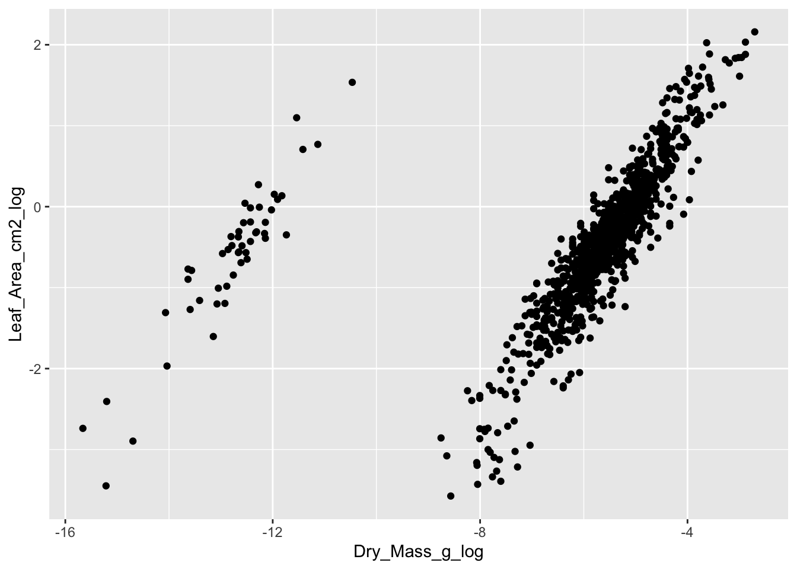
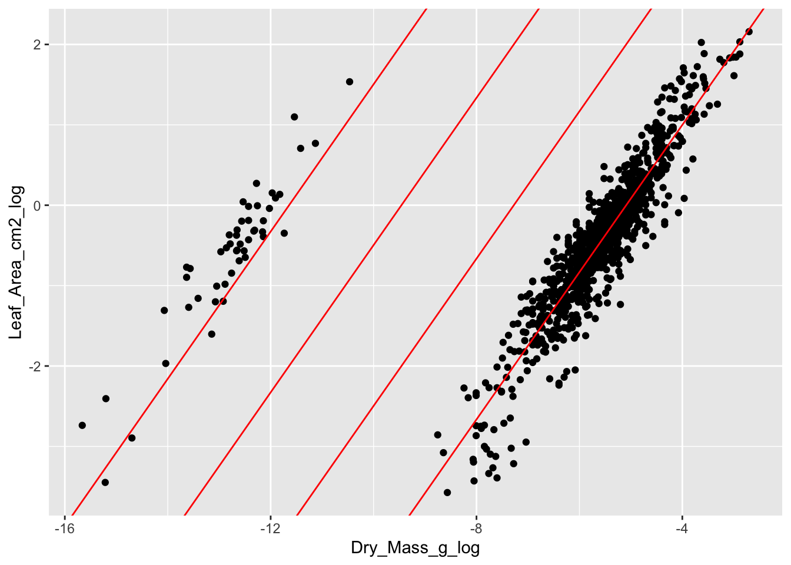

4 Data cleaning
Data cleaning is the first steps after digitizing the data. Each dataset has to be checked for several types of errors and corrected if possible. Some of the checking and correction can be done automatically, but other things have to be done manually. And sometimes we need play detectives to find the problems and the right way to correct errors. This tutorial shows the main steps for how to check a dataset and make corrections.
For this tutorial we will be working with the trait dataset from Svalbard. See chapter ?sec-pftc-data for how to access the data and information about the study, experiment and datasets.
4.1 Useful packages
There are a couple of R packages that are useful for data curation. First, tidyverse is a collection of R packages used for basic data manipulation and analysis. We will also use lubridate, which helps with data and time formats.
If you have never used the packages you need to install it first using the function install.packages("tidyverse"). Otherwise, you can just load the packages.
Another useful package for data curation is tidylog, which is built on the dplyr and tidyr packages and provides useful information about the functions used.
Tidylog will for example tell you how many rows have been removed and are remaining when using the filter() function or how many rows match when using a join function. The information is always indicated in absolute numbers and percentage. This additional information is very useful to check if the right observations have been removed or manipulated, because mistakes are easily done.
Let’s install and/or load tidylog.
Note, that once tidylog is loaded it will automatically prioritize the tidylog function before the dplyr and tidyr functions. You actively have to choose if you do not want to use the tidylog version by using this notation: dplyr::filter().
Some data checking has to be done by hand and detecitve work, other things can be done more automatically. There are a few packages that can help with some of this work and for this tutorial we will use the validate package.
4.2 Import data
The first step is to import the dataset to R. The data is stored as a csv file and we can use the function read_csv() to import that data. If your data has another format or you are new to importing data, have a look at this page.
Give the dataset a name using a backwards pointing arrow: <- The name should indicate that this is the raw data.
raw_traits <- read_csv("data/PFTC4_Svalbard_2018_Gradient_Traits.csv")
#> Rows: 11345 Columns: 15
#> ── Column specification ────────────────────────────────────────────────────────
#> Delimiter: ","
#> chr (7): Project, Gradient, PlotID, ID, Functional_group, Taxon, Trait
#> dbl (7): Year, Site, Individual_nr, Value, Elevation_m, Latitude_N, Longitu...
#> date (1): Date
#>
#> ℹ Use `spec()` to retrieve the full column specification for this data.
#> ℹ Specify the column types or set `show_col_types = FALSE` to quiet this message.The dataset has 11345 rows and 15 columns and a number of numeric, character and date variables. It contains measurements of 14 traits from two elevational gradients on Svalbard. The traits were measured on individual plants from 21 different graminoid and forb species. For more information about the sites, traits and measurements see here.
Some manipulation
Let us introduce some errors to the dataset.
The code to do this is hidden. But if you want to replicate the code to introduce errors you can find the code from line 116.
4.3 View dataset
First, we want to have a look at the dataset. By typing raw_traits in the console it will display the first rows and columns of the dataset. Note that the last column and many rows are not shown.
raw_traits
#> # A tibble: 10,298 × 10
#> Date Gradient Site PlotID Individual_nr ID Taxon Trait Value
#> <chr> <chr> <dbl> <chr> <dbl> <chr> <chr> <chr> <dbl>
#> 1 2018-07-20 B 5 D 1 AIB1395 saxifra… Plan… 6.5 e+0
#> 2 2018-07-20 B 5 D 1 AIB1395 saxifra… Wet_… 2.92e-2
#> 3 2018-07-20 B 5 D 1 AIB1395 saxifra… Dry_… 4 e-3
#> 4 2018-07-20 B 5 D 1 AIB1395 saxifra… Leaf… 5.66e-1
#> 5 2018-07-20 B 5 D 1 AIB1395 saxifra… Leaf… 6.75e-1
#> 6 2018-07-20 B 5 D 1 AIB1395 saxifra… SLA_… 1.69e+2
#> 7 2018-07-20 B 5 D 1 AIB1395 saxifra… LDMC 1.37e-1
#> 8 2018-07-20 B 5 D 1 AIB1395 saxifra… C_pe… 3.89e+1
#> 9 2018-07-20 B 5 D 1 AIB1395 saxifra… N_pe… 1.14e+0
#> 10 2018-07-20 B 5 D 1 AIB1395 saxifra… CN_r… 3.41e+1
#> # ℹ 10,288 more rows
#> # ℹ 1 more variable: Elevation_m <dbl>At the top you can see that the dataset has 10298 observations and 10 columns. These numbers give you a first indication if you have imported the right dataset, and if all observations and columns are there.
4.4 Check variable type
One of the things we want to do is checking if all the variables in the dataset have the right type. For each variable the output above indicates the data type just below the variable name. The most common types are dbl (numeric or integer), chr (character), or date (date).
If you are unfamiliar with data types see here.
The first variable Date is a character, which does not seem to be correct. This means that one or several observations in this column are not dates. Since we do not expect to have very many dates (the data was collected during a few days), we can check all the different values in Date. For this we use the function distinct() on the variable Date.
raw_traits |>
distinct(Date)
#> distinct: removed 10,291 rows (>99%), 7 rows remaining
#> # A tibble: 7 × 1
#> Date
#> <chr>
#> 1 2018-07-20
#> 2 2018-07-18
#> 3 2018-07-21
#> 4 2018-07-19
#> 5 2018-07-17
#> 6 18
#> 7 <NA>We see that there are 6 distinct dates in the variable Date. One of the dates is “18”, which is not a correct date format and turned the variable into a character. Note the additional information from the tidylog package on the distinct() function, which shows the number of rows removed and remaining.
The next step is to check which observastion(s) have the wrong date. For this we can use the function filter() to extract all observations with the date 18. We can pipe this to View(), which will display the whole table in a separate window. Note that for this tutorial, we use a different way of displaying the output
raw_traits |>
filter(Date == "18") |>
View()#> filter: removed 10,291 rows (>99%), 7 rows remaining
#> # A tibble: 7 × 10
#> Date Gradient Site PlotID Individual_nr ID Taxon Trait Value
#> <chr> <chr> <dbl> <chr> <dbl> <chr> <chr> <chr> <dbl>
#> 1 18 C 1 A 3 AMO3822 salix polaris Plant… 1.1 e+0
#> 2 18 C 1 A 3 AMO3822 salix polaris Wet_M… 5.76e-3
#> 3 18 C 1 A 3 AMO3822 salix polaris Dry_M… 2 e-3
#> 4 18 C 1 A 3 AMO3822 salix polaris Leaf_… 1.88e-1
#> 5 18 C 1 A 3 AMO3822 salix polaris Leaf_… 2.84e-1
#> 6 18 C 1 A 3 AMO3822 salix polaris SLA_c… 1.42e+2
#> 7 18 C 1 A 3 AMO3822 salix polaris LDMC 3.47e-1
#> # ℹ 1 more variable: Elevation_m <dbl>We can see that a single observation (with multiple traits) has the wrong date. There is no way that we would remember on what day this leaf was collected (remember the dataset has > 10000 leaves!). We have to start playing detectives now. The only way to find the right date for these observations is to check the raw data (leaves), notes or photos. It is therefore important to keep all the data entry sheets (paper version), take a photo of them and make tidy notes during field work. This is the only way to fix many of the problems.
Luckily, we took pictures from all envelopes of the leaves. The date on the envelope is 18 July 2018 (Figure 4.1), and it seems that there has been a typo.

Let’s replace the wrong date and give the variable Date the right class.
For this we will use the function mutate() which adds or manipulates a column. Inside the mutate we will use the if_else() function to replace the date for a specific ID. This function is useful for a single condition. However for multiple statements (many if else conditions), we recommend to use the case_when() function (see below). To change the class, we use the ymd() function from the lubridate package. Note that we now have to assign the table to a new or the same name to make the change permanent.
An important step and good practice when cleaning data is to check that the right correction has been done. Here is where the tidylog package comes in handy. It shows that for 7 observation Date has been changed. This matches with the number of observations that had a wrong date.
To be absolutely sure we can look at the specific leaf (ID == “AMO3822”) and see if the date is now corrected. Another way would be to run the distinct(Date) function again.
raw_traits |>
filter(ID == "AMO3822") |>
select(Date)
#> filter: removed 10,291 rows (>99%), 7 rows remaining
#> select: dropped 9 variables (Gradient, Site, PlotID, Individual_nr, ID, …)
#> # A tibble: 7 × 1
#> Date
#> <date>
#> 1 2018-07-18
#> 2 2018-07-18
#> 3 2018-07-18
#> 4 2018-07-18
#> 5 2018-07-18
#> 6 2018-07-18
#> 7 2018-07-18The date has been fixed.
Using the validate package, we can check all the variables at once. The validate package is based on making some rules that need checking and then applying those rules to a dataset. The rules can be reused and applied to any dataset.
Let’s make some rules about data types using the validator() function:
# rules
rules <- validator(
# check variable types
is.character(Gradient),
is.character(PlotID),
is.character(ID),
is.character(Taxon),
is.character(Trait),
is.numeric(Site),
is.numeric(Individual_nr),
is.numeric(Value),
is.numeric(Elevation_m),
is.Date(Date))Now the rules can be applied to the dataset using the confront() function.
The summary function gives an overview of each rule and how many passes and fails there are. It looks like all the rules are passed.
4.5 Check for duplicates
Another common problem is duplicate observations. This can happen when data is entered twice. The why to find duplicates is to check that the combination of variables are unique. In our dataset, we expect that Date, Gradient, Site, PlotID, Individual_nr, ID, Taxon and Trait should be unique, and only occurring once.
To check this, we can use the rule is_unique().
Note that Value was not included in the is_unique(). This was done intentionally, because a common mistake is to have a duplicate, but with a different value. This is either because one of the variables is wrong, e.g. it has the wrong Site and therefore appears to be a duplicate. Alternatively, the leaf could have been measured twice by accident, which would likely give two slightly different values. When getting a duplicate, these different options for why there is a duplicate have to be considered and carefully checked in the raw data.
rules <- validator(
# check variable types
is_unique(Date, Gradient, Site, PlotID, Individual_nr, ID, Taxon, Trait))
out <- confront(raw_traits, rules)
summary(out)
#> name items passes fails nNA error warning
#> 1 V1 10298 10296 2 0 FALSE FALSE
#> expression
#> 1 is_unique(Date, Gradient, Site, PlotID, Individual_nr, ID, Taxon, Trait)Two observations fail the rules and are not unique.
The violate package can visualise the number of passes and fails, which can be useful. For this, use the plot function.
plot(out)
To fix the problem, we need to know which observation is a duplicate. Here, we can use the function violating() for the data and the results and it will show the duplicate rows.
violating(raw_traits, out)
#> # A tibble: 2 × 10
#> Date Gradient Site PlotID Individual_nr ID Taxon Trait Value
#> <date> <chr> <dbl> <chr> <dbl> <chr> <chr> <chr> <dbl>
#> 1 2018-07-20 B 3 C 3 BEK3638 salix po… Dry_… 0.00275
#> 2 2018-07-20 B 3 C 3 BEK3638 salix po… Dry_… 0.00275
#> # ℹ 1 more variable: Elevation_m <dbl>We get two exact duplicates, where even Value is the same. We can therefore assume that the leaf has only been measured once, but the data has been entered twice.
To fix the problem, we want to remove one of the duplicates. We group by the variables we expect to be unique and use distinct() with the argument .keep_all = TRUE to remove the duplicates.
raw_traits <- raw_traits |>
group_by(Date, Gradient, Site, PlotID, Individual_nr, ID, Taxon, Trait) |>
distinct(.keep_all = TRUE) |>
ungroup()
#> group_by: 8 grouping variables (Date, Gradient, Site, PlotID, Individual_nr, …)
#> distinct (grouped): removed one row (<1%), 10,297 rows remaining (removed 0 groups, 10,297 groups remaining)
#> ungroup: no grouping variables remainTidylog shows again what happens and how many rows have been removed. There are 8 grouping variables and as expected, one row is removed, which is the duplicated row.
We can also run the code from above again to check if the duplicate is gone.
4.6 Check for missing data
A common problem in a dataset are missing data. There are many reasons for having missing data. For now, we want to find out if we have any NAs in the dataset and if yes where and how many.
A quick way to get an overview of all NAs in the dataset is to select for any NAs in the dataset and summarise how many NAs there are.
The variables Date and Value have NAs. It is not always a problem to have missing data. In this case, Date is not a crucial variable, and we know the data was collected during a few days in July 2018. We could just impute one of these dates. But for now, let’s focus on the NAs in Value.
Once the missing values are detected one has to decide if the missing data can be recovered, or if the missing values should be removed from the dataset. After checking all the raw data and notes, we cannot find the Values from these observations and have to conclude that the data is useless. So, we want to remove them. For this we will use the function drop_na() on the variable Value.
raw_traits <- raw_traits |>
drop_na(Value)
#> drop_na: removed 3 rows (<1%), 10,294 rows remainingThis operation has removed 3 rows, which is the number of NA’s in this variable.
Missing data can also be detected using the validator package. It is however more tedious to write one rule (is.na() or !is.na()) for each variable. But it can also be useful, because the is.na() function can be combined with any() or all(), defining to include/exclude some or all NAs in a variable.
4.7 Check range of values
Some variables might have specific values we want to check. For categorical variables there is usually a list of specific values to test, while for numeric variables, it is more common to have a range of values or upper/lower limits.
4.7.1 Categorical variables
Let’s look at the variable leaf ID, where we have a list of valid values. For this, we need to get a list of valid IDs, using the get_PFTC_envelope_codes function from the PFTCFunctions package.
#remotes::install_github("Plant-Functional-Trait-Course/PFTCFunctions")
library("PFTCFunctions")
leaf_ID <- get_PFTC_envelope_codes(seed = 32)Let’s make some rules to check the variables Gradient, Site and leaf_ID.
And then check the rules in the dataset.
There are 14 rows with a wrong leaf ID.
violating(raw_traits, out)
#> # A tibble: 14 × 10
#> Date Gradient Site PlotID Individual_nr ID Taxon Trait Value
#> <date> <chr> <dbl> <chr> <dbl> <chr> <chr> <chr> <dbl>
#> 1 2018-07-21 B 1 A 2 BGB8422 salix … Plan… 0.7
#> 2 2018-07-21 B 1 A 2 BGB8422 salix … Wet_… 0.0132
#> 3 2018-07-21 B 1 A 2 BGB8422 salix … Dry_… 0.0028
#> 4 2018-07-21 B 1 A 2 BGB8422 salix … Leaf… 0.267
#> 5 2018-07-21 B 1 A 2 BGB8422 salix … Leaf… 0.538
#> 6 2018-07-21 B 1 A 2 BGB8422 salix … SLA_… 192.
#> 7 2018-07-21 B 1 A 2 BGB8422 salix … LDMC 0.212
#> 8 2018-07-21 B 1 A 2 BGB8422 salix … C_pe… 47.0
#> 9 2018-07-21 B 1 A 2 BGB8422 salix … N_pe… 3.27
#> 10 2018-07-21 B 1 A 2 BGB8422 salix … CN_r… 14.4
#> 11 2018-07-21 B 1 A 2 BGB8422 salix … dN15… 4.41
#> 12 2018-07-21 B 1 A 2 BGB8422 salix … dC13… -31.8
#> 13 2018-07-21 B 1 A 2 BGB8422 salix … P_pe… 0.213
#> 14 2018-07-21 B 1 A 2 BGB8422 salix … NP_r… 15.3
#> # ℹ 1 more variable: Elevation_m <dbl>The ID BGB8422 does not exist in the list of valid leaf IDs. There might be a typo in this ID. One thing is to search for the letter or number combinations and see if we can figure out where the mistake happened. For this we will use the stringr package, which is part of tidyverse.
With the function str_detect() we can search for specific strings like “BGB” or “8422” in the variable hashcode.
leaf_ID |>
filter(str_detect(hashcode, "8422"))
#> filter: removed 17,575 rows (>99%), one row remaining
#> # A tibble: 1 × 1
#> hashcode
#> <chr>
#> 1 BGP8422When searching for the combinations of numbers, we find a ID that is very similar but a B is replaced by the P. This seems like a mistake that could be easily made. The envelope of this sample should also be checked before fixing the error.
4.7.2 Numeric variables
For numeric variables we could use another set of rules. For example the variable LDMC (Leaf dry matter content) is the dry mass divided by the wet mass. If LDMC is larger than 1 it means that the dry leaf was heavier than the wet leaf, which does not make sense. So, a simple rule to test is that LDMC is between 0 and 1.
For this you could just use Value <= 1. But because we have different traits, we need to use a conditional rule:
# rules
rules <- validator(
if (Trait == "LDMC") Value <= 1)And then check the rules in the dataset.
None of the values is violating the rules, so all is good.
4.8 Check taxonomy
A common problem is inconsistencies within variables. In this dataset such a variable is Taxon. It is very common to make mistakes and typos with Latin species names during data entry.
Let’s look at all unique species names using distinct() and sort them by Taxon using arrange(). This is a good way to see small typos in the species names.
raw_traits |>
distinct(Taxon) |>
arrange(Taxon) |>
print(n = Inf)
#> distinct: removed 10,259 rows (>99%), 35 rows remaining
#> # A tibble: 35 × 1
#> Taxon
#> <chr>
#> 1 alopecurus ovatus
#> 2 bistorta vivipara
#> 3 calalmagrostis neglecta
#> 4 calamagrostis neglecta
#> 5 cassiope tetragona
#> 6 cerastium arcticum
#> 7 draba arctica
#> 8 draba oxycarpa
#> 9 dryas octopetala
#> 10 equisetum arvense
#> 11 equisetum scirpoides
#> 12 festuca rubra
#> 13 festuca viviparoidea
#> 14 luzula confusa
#> 15 luzula nivalis
#> 16 micranthes hieraciifolia
#> 17 micranthes nivalis
#> 18 oxiria digyna
#> 19 oxyra digyna
#> 20 oxyria digina
#> 21 oxyria digyna
#> 22 pedicularis hirsuta
#> 23 poa alpina
#> 24 poa arctica
#> 25 poa pratensis
#> 26 potentilla hyparctica
#> 27 ranunculus sulphureus
#> 28 salix polaris
#> 29 saxifraga cernua
#> 30 saxifraga cespitosa
#> 31 saxifraga hirculus
#> 32 saxifraga oppositifolia
#> 33 silene acaulis
#> 34 stellaria longipes
#> 35 trisetum spicatumThere are four different versions for oxyra digyna and two for calamagrostis neglecta. Obviously, some typos where made when entering the data.
4.8.1 Use case_when()
Because we have to change multiple species names, we will use case_when(), which allows for multiple conditions.
4.8.2 Use taxon dictionary
An alternative to using case_when() to fix the problem, would be to create a dictionary with bad and good species names.
Let’s make a taxon dictionary.
Next, we need to join the dictionary to the dataset using the bad name column. And with coalesce with can replace the bad names with the good names.
4.8.3 Checking Taxon using TNRS
It is always advisable to check the taxonomy using a database such as TNRS, a Taxonomic Name Resolution Service.
Maitner please add an example using TNRS.
4.9 Visualise data
Some errors and problems in the data are difficult to detect by looking at the dataset. For example checking if the measurements are realistic is nearly impossible by going through a table with numbers. For this, visualising the data is much more effective.
4.9.1 Histogram or density plot
Using histograms or density plots shows you the range of values in a variable. We are showing the density for each trait and colour the two different gradients.

Note that the size traits (plant height, leaf mass, area and thickness) have distributions with very long tails. This is common for size related variables and log transformation is common for such variables.
Also not that leaf area has a huge tail and goes up to almost 20’000 cm2. This is a leaf of almost 2 m2, which is impossible for a plant from Svalbard. This value needs to be checked, it could be a typo.
Let’s log transform the size traits first.
raw_traits <- raw_traits |>
mutate(Value_log = if_else(Trait %in% c(
"Plant_Height_cm",
"Wet_Mass_g",
"Dry_Mass_g",
"Leaf_Area_cm2",
"Leaf_Thickness_mm"), log(Value), Value),
Trait = recode(Trait,
"Plant_Height_cm" = "Plant_Height_cm_log",
"Wet_Mass_g" = "Wet_Mass_g_log",
"Dry_Mass_g" = "Dry_Mass_g_log",
"Leaf_Area_cm2" = "Leaf_Area_cm2_log",
"Leaf_Thickness_mm" = "Thickness_mm_log"))
#> Warning: There was 1 warning in `.fun()`.
#> ℹ In argument: `Value_log = if_else(...)`.
#> Caused by warning in `log()`:
#> ! NaNs produced
#> mutate: changed 5,214 values (51%) of 'Trait' (0 new NAs)
#> new variable 'Value_log' (double) with 7,990 unique values and 0% NAAnd remake the density plot using the log-transformed values.

The size traits do not have a long tail anymore.
Let’s find the giant leaf. For this we can filter observations in the trait Leaf Area that have Value larger than 10.
raw_traits |>
filter(Trait == "Leaf_Area_cm2_log",
Value > 10)
#> filter: removed 10,293 rows (>99%), one row remaining
#> # A tibble: 1 × 11
#> Date Gradient Site PlotID Individual_nr ID Taxon Trait Value
#> <date> <chr> <dbl> <chr> <dbl> <chr> <chr> <chr> <dbl>
#> 1 2018-07-18 C 5 C 2 ANH3472 oxyria dig… Leaf… 17965
#> # ℹ 2 more variables: Elevation_m <dbl>, Value_log <dbl>This value for Leaf Area is impossible. We can again check the envelope of this leaf to find out if this was a typo. It turns out the comma was missed when typing in the data. Let’s fix the problem with a mutate and if_else() statement. Note that we have to fix the problem for the Value and Value_log column.
raw_traits <- raw_traits |>
mutate(Value = if_else(ID == "ANH3472" & Trait == "Leaf_Area_cm2_log", 1.7965, Value),
Value_log = if_else(ID == "ANH3472" & Trait == "Leaf_Area_cm2_log", log(1.7965), Value_log))
#> mutate: changed one value (<1%) of 'Value' (0 new NAs)
#> changed one value (<1%) of 'Value_log' (0 new NAs)4.9.2 Correlations
Another way to check the data is to plot variables against each other that should be correlated. In this dataset, we can plot dry mass against leaf area. We would expect a positive correlation between the two variables, where large leaves have a higher dry mass.
#> Warning: Removed 39 rows containing missing values or values outside the scale range
#> (`geom_point()`).
We see a good correlation between leaf area and dry mass. However, there is a cloud with observations that separate from the main data cloud. These leaves have a lower dry mass and area.
The problem with the separate data points is the unit. They were measured in mg instead of g and are 3 digits off. This can easily be seen, when adding the regression lines for each data cloud, and two lines in between with the same slope but the intercept being 10 times smaller.
#> Warning: Removed 39 rows containing missing values or values outside the scale range
#> (`geom_point()`).